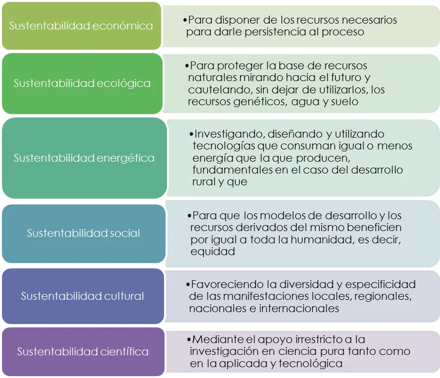

TIPOS DE LA SUSTENTABILIDAD
Podemos identificar que el desarrollo sostenible o sustentable se basa en desarrollar estrategias sobre tres factores: sociedad, economía y medio ambiente.
- Sustentabilidad en la sociedad
Es el momento en que nos enfocamos ante los aspectos sociales del crecimiento sostenible, miramos los temas que afectan a la gente y la sociedad civil, de manera directa y que o bien asisten o bien dañan el proceso de progresar la calidad de vida. Con especial atención en la responsabilidad social y el urbanismo sustentable.
- Sustentabilidad económica
De forma general, cuando nos enfocamos en la dirección de una economía y su futuro desde una perspectiva equilibrada, miramos el sistema que determina de qué manera se distribuyen los recursos limitados y su capacidad de utilizarlos, al mismo tiempo se examina qué opciones se emplean a todos los niveles y quién lo necesita desde el ámbito de los recursos económicos.
- Sustentabilidad ambiental
Examinamos y determinan los recursos naturales, tanto renovables como no renovables, que en definitiva componen nuestros alrededores – hábitats – y nos ayudan a sostener y mejorar nuestras vidas y la del entorno natural donde se habita. (Ver también el qué es un ecosistemas para entender la relación con el entorno natural, la diversidad y lo que deben de ser, así como el equilibrio necesario)
